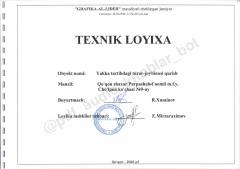

CKQo'qon shahridagi yakka tartibdagi turar-joy binosining texnik loyihaviy hujjatlari.
Ushbu hujjat Qo'qon shahri, Cho'lpon ko'chasi 9-uy manzilida joylashgan yakka tartibdagi turar-joy binosining texnik loyihasini o'z ichiga oladi. Unda binoning bosh rejasi, konstruktiv yechimlari, poydevor tarxi va texnik-iqtisodiy ko'rsatkichlari batafsil bayon etilgan.